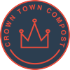
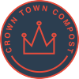

Download CV
Hey, I'm Robert Mion. My Top-5 Real Skills are:
- Persuade using observation, consideration and storytelling
- Learn willingly and with others by admitting what I don’t know
- Empower quieter voices using unbiased moderation
- Achieve shared understanding by rapidly prototyping important ideas
- Spread knowledge using respect, metaphor and the principles of accessibility
 
